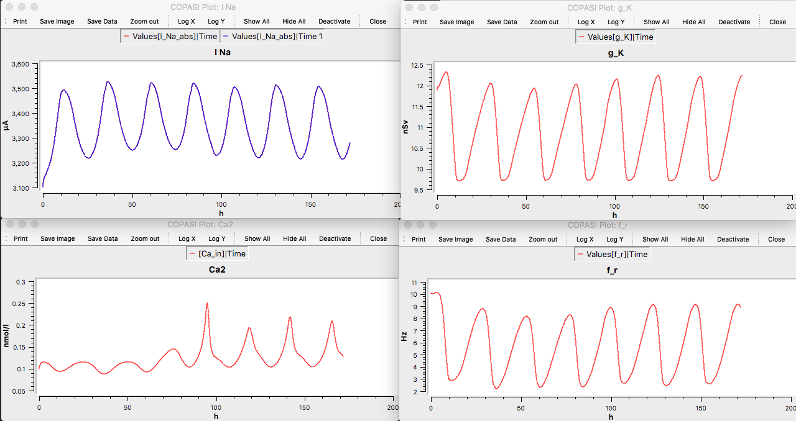

Vasalou C, Henson MA (2010) A multiscale model to investigate circadian rhythmicity of pacemaker neurons in the suprachiasmatic nucleus. PLoS Comput Biol 6:e1000706 [PubMed]
are available at the biomodels website: https://www.ebi.ac.uk/biomodels/BIOMD0000000246#Files Example: To recreate a few traces in COPASI from figure 2 in the paper: import the downloaded xml (SBML) file into COPASI, change the Duration to more than 100 hours (172 here) and the interval point to 0.1 hours. The more than 100 hours lets the model stabilize. Create a few graphs (use Plots under Output specifications). Running (click Run under Time Course window - see below image)) creates the graphs. (Above image of COPASI simulator ready to run.)  (Above traces are I Na, g K, Ca, and firing rate plotted vs hours. Each cycle is 24 hours.)